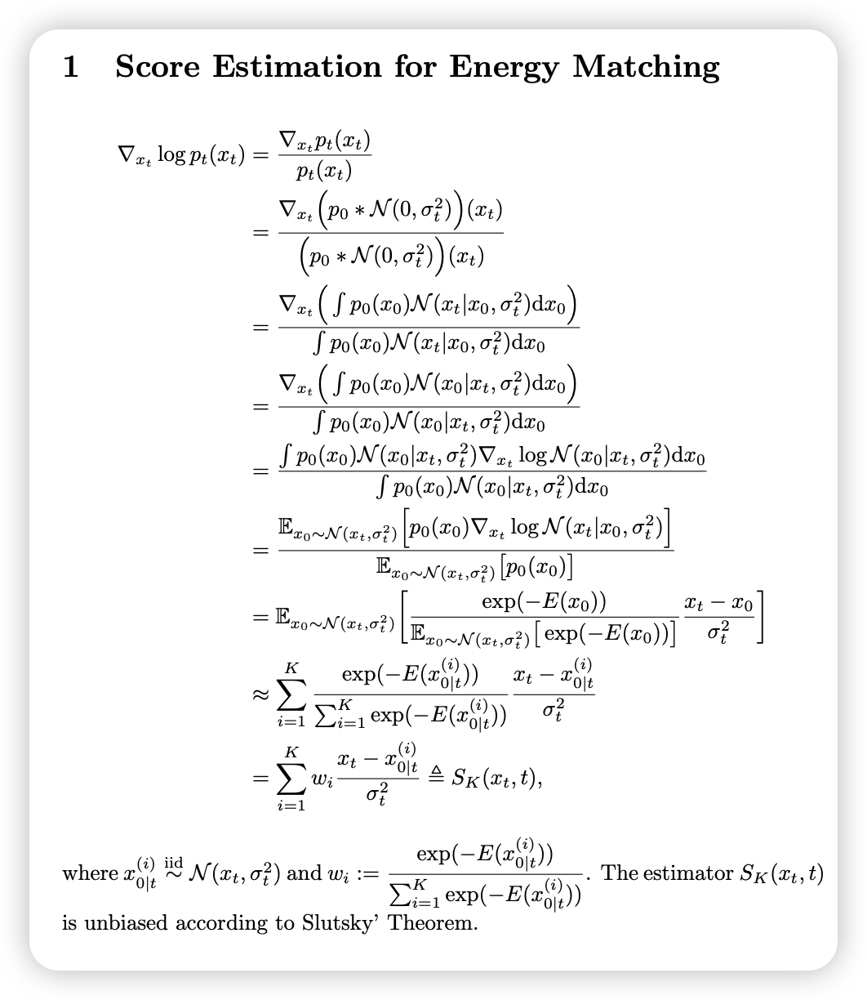

Iterated Denoising Energy Matching for Sampling from Boltzmann Densities
Iterated Denoising Energy Matching for Sampling from Boltzmann Densities
Background
采样的核心挑战:
从高维复杂分布采样是困难的，主要面临以下挑战：
- 多模态问题（Multi-modality）：目标分布可能存在多个模式，导致简单的采样方法难以探索所有模式。
- 高能量屏障（Energy Barriers）：Boltzmann分布中的不同模态可能被高能量屏障隔开，使得采样器难以在模式之间跳跃。
- 计算开销大（Computational Cost）：传统的马尔可夫链蒙特卡洛（MCMC）方法，如Langevin Dynamics，需要大量迭代才能收敛。
现有方法
- Langevin MCMC：使用梯度信息来更新样本，但在高能量屏障情况下可能难以有效探索。
- Contrastive Divergence (CD)：用于训练能量基模型，但依赖于短步Langevin采样，可能导致模型分布与目标分布不匹配。
- Score Matching：学习目标分布的对数梯度，但通常要求明确的概率密度函数。
| 方法 | 目标 | 主要挑战 | 计算效率 |
|---|---|---|---|
| MCMC | 从目标分布采样 | 采样慢，难以跨越高能量屏障 | 低 |
| EBM | 学习一个概率分布 | 依赖 MCMC，训练不稳定 | 低 |
| 扩散模型 | 从噪声生成样本 | 依赖真实数据，计算复杂 | 中 |
为什么 iDEM 比这些方法更好？
iDEM 结合了 EBM 的能量建模能力 和 扩散模型的高效模式混合，但不依赖 MCMC 采样，解决了：
- MCMC 的低效问题：不需要构造马尔可夫链，采样更快。
- EBM 的 MCMC 依赖问题：用扩散模型直接优化能量函数梯度，而不是通过 MCMC 采样。
- 扩散模型的依赖数据问题：iDEM 仅使用能量函数，而不需要真实数据样本。
补充一些现阶段的算法和问题
解析：在 Boltzmann 分布采样中的数据不足问题及变分方法的挑战
本文讨论了从 Boltzmann 类型分布（Boltzmann-type distributions）采样的挑战，尤其是在数据不足的情况下如何有效训练深度生成模型 来逼近目标分布 。以下是该段内容的详细解析：
1. 问题背景：数据不足导致难以最大化似然
在经典的生成建模框架中，我们通常通过最大化似然（Maximum Likelihood Estimation, MLE） 来训练生成模型 ，即最小化正向 KL 散度：
但这里面有一个问题：
- 计算这个 KL 散度时，需要从目标分布 采样。
- 然而，在 Boltzmann 分布下，我们通常无法直接获得足够的样本，因为 Boltzmann 分布涉及高维状态空间，并且需要复杂的计算（如分子模拟）。
- 没有足够的真实数据，就无法直接用 MLE 训练生成模型。
结论：在数据不足的情况下，经典的 MLE 方法（最大化 的对数似然）不可行。
2. 现有替代方法
由于无法直接最大化 ，研究人员通常采用以下方法来从目标分布采样：
- 马尔可夫链蒙特卡洛（MCMC）：通过构造马尔可夫链，渐进地收敛到目标分布，但收敛速度慢，尤其在高维情况下容易陷入局部模式（mode collapse）。
- 序贯蒙特卡洛（SMC）：结合重要性采样与 MCMC，适用于动态系统，但计算成本高。
- 分子动力学（MD）：用于物理系统的采样，但需要大量计算资源。
由于这些方法都有不同程度的问题，本文提出考虑 变分方法（Variational Approaches） 作为替代。
3. 变分方法的优势
在变分方法中，我们训练一个参数化的生成模型 ，使其尽可能匹配 ，但采用不同的优化准则：
- 样本从 而非 生成（即自采样）。
- 这避免了 MLE 依赖目标分布样本的问题。
一个自然的选择是 反向 KL 散度（Reverse KL divergence）：
这个度量有两个主要优势：
- 计算可行：因为样本是从 采样，而不是 ，所以不依赖于目标分布的真实数据。
- 可以直接优化 使其匹配目标分布，避免了传统采样方法（如 MCMC）收敛慢的问题。
4. 反向 KL 散度的问题：模式寻优（Mode-Seeking）
尽管反向 KL 具有计算上的便利性，但它有一个显著的问题：
- 反向 KL 倾向于将 的概率质量集中在目标分布 的高概率区域，即它只关注某些模式，而可能忽略低概率区域。
- 这意味着 可能会覆盖不全整个目标分布的能量景观（energy landscape）。
直观理解：
- 设想 是一个复杂的能量景观，包含多个峰值（高概率区域）。
- 反向 KL 会使得 主要匹配某个高概率峰值，而忽略其他模式。
- 这就导致 不能很好地探索整个分布，造成模式塌陷（mode collapse）。
5. 解决方案
为了克服反向 KL 的模式寻优问题，研究人员通常采用：
-
混合 KL 散度优化：同时最小化正向 KL 和反向 KL，以平衡探索性和模式匹配能力。
-
能量匹配（Energy Matching）：iDEM 采用了一种新的能量匹配损失，让模型不仅关注高概率区域，还能更好地探索整个能量景观：
这里 代表目标分布的能量梯度，而 代表当前模型 的梯度。这个损失强制 逐步学习整个能量景观，而不是仅仅集中在某些模式上。
-
使用扩散模型（Diffusion Models）：扩散模型在训练过程中添加噪声，这有助于 访问低概率区域，并最终学到更完整的分布。
6. 总结
- 由于从 Boltzmann 分布 采样的数据不足，传统的 MLE 训练生成模型的方法不可行。
- 变分方法（如最小化反向 KL 散度）可以避免数据不足的问题，但会导致模式寻优（mode-seeking）问题。
- iDEM 提出了一种新的 能量匹配方法 和 扩散模型结合，从而克服了反向 KL 的局限性，实现更高效的概率分布匹配。
Algorithm

score function的MC估计方法：
论文方法：
陈提出的无需梯度方法：
两种方法都是对的（依赖高斯卷积奇妙的性质），只是推演过程不同。
- 论文方法中，可以使用logsumexp技巧缓解数值稳定。
- 陈的方法中，也可以在计算weight的时候直接把抽样出的都减去其mean来缓解数值稳定,因为exp(E(x))太大太小都完蛋，接近0最好了。（这一点和优势函数A=Q-V有相似之处）
本文提出了一种新型神经采样器 iDEM（Iterated Denoising Energy Matching），用于从已知能量函数 的 Boltzmann 分布 进行高效采样。iDEM 基于去噪扩散模型（Denoising Diffusion Models），结合了一种新颖的 模拟无关（simulation-free）随机回归目标，实现了高效、可扩展的采样方法。
本文的贡献可以归纳为以下几个关键点：
1. iDEM 的核心创新
1.1 计算效率高
- iDEM 避免了 MCMC、变分推断（Variational Objectives）、重要性采样（AIS, FAB）、序贯蒙特卡洛（SMC） 等方法中的高计算成本问题（Tab. 1）。
- 其计算复杂度显著低于现有方法，使得 首次成功扩展到 LJ-55 体系（Lennard-Jones 55 粒子系统）。
1.2 能够良好覆盖目标分布的所有模式
- 传统的 MCMC 和变分方法容易模式塌陷（Mode Collapse），即无法探索目标分布的所有模式。
- iDEM 通过 扩散采样（Diffusion Sampling）+ 探索性离策略（Exploratory Off-policy） 方法，确保所有模式的良好覆盖。
1.3 适用于具有对称性的科学应用
- iDEM 能够自然地结合目标能量函数 的 对称性（Symmetry），如 SE(3) 旋转不变性 和 对称性。
- 这使得 iDEM 特别适用于科学计算领域，例如分子动力学模拟、蛋白质折叠、量子力学计算等。
2. iDEM 的算法结构
iDEM 采用双层（bi-level）算法结构：
2.1 内循环（Inner Loop）
- 目标：使用 模拟无关（simulation-free）随机回归目标，直接在能量函数 上优化扩散采样器。
- 方法：
- 使用扩散模型（diffusion-based sampler）对能量景观进行去噪平滑（smoothing）。
- 通过**随机梯度下降（SGD）**优化采样器，使其更接近目标分布 。
2.2 外循环（Outer Loop）
- 目标：
- 摊销采样（Amortized Sampling）：随着训练进行，iDEM 逐渐模仿 混合良好的 MCMC 链（well-mixed MCMC chain），加速采样。
- 高效探索能量景观（Efficient Exploration）：利用内循环不断更新的扩散模型，使采样器逐渐更接近真实能量分布。
- 方法：
- 运行更新后的扩散采样器的逆向随机微分方程（Reverse SDE），模拟从低密度区域向高密度区域的粒子转移（transporting particles from low to high-density regions）。
直观理解：
- iDEM 采用了 去噪扩散模型的思想（类似 Ho et al., 2020 提出的扩散概率模型）。
- 其前向过程（Forward Process） 在能量空间中添加噪声，最终达到标准正态分布。
- 反向过程（Reverse Process） 学习如何从噪声恢复到真实能量分布，类似于“去噪”过程。
3. iDEM 的理论优势
3.1 直接平滑能量景观（Smoothing the Energy Landscape）
- 通过扩散模型的模式混合特性（Fast-Mixing in High Dimensions），iDEM 能够有效跨越不同的模式，提高探索能力（De Bortoli et al., 2021）。
- 这避免了 MCMC 难以穿越高能量屏障的问题。
3.2 避免模式塌陷
- 由于 iDEM 在内循环中使用了广泛覆盖所有模式的学习目标，训练过程中不会丢失某些模式。
- 传统变分推断方法（如 KL）可能只会关注高概率模式，而忽略低概率模式，iDEM 则可以更全面地学习整个分布。
3.3 采样更加稳定
- 由于 iDEM 不依赖于 MCMC 的样本初始化，其采样质量不受 MCMC 初始样本的影响。
- 这使得 iDEM 更适用于大规模科学计算，如复杂多体系统的 Boltzmann 采样。
4. 实验结果
iDEM 在多个任务上进行了验证，包括：
-
合成高斯混合分布（Synthetic Gaussian Mixtures）
- 证明 iDEM 在多模态分布上的模式覆盖能力。
-
SE(3) × 不变的双势阱（Double-Well）
- 复杂不变性系统的采样能力。
-
Lennard-Jones 体系（LJ-13, LJ-55）
- iDEM 是第一个成功扩展到 LJ-55 的能量匹配方法。
实验结论：
- iDEM 在所有指标上达到或超越当前最优方法（如 FAB, Midgley et al., 2023b）。
- 训练时间和内存需求远低于 FAB 和其他神经采样器（PIS, DIS, DDS），使其成为目前唯一能扩展到 LJ-55 的方法。
5. iDEM 的关键贡献
| 方面 | iDEM 的创新点 |
|---|---|
| 计算效率 | 低计算成本，不依赖 MCMC 或重要性采样 |
| 模式覆盖 | 避免模式塌陷，适用于多模态分布 |
| 对称性适应 | 可适应科学计算中的 SE(3) × 不变性 |
| 扩展能力 | 第一个扩展到 LJ-55 体系的方法 |
| 理论优势 | 结合扩散模型的高维快速混合特性 |
6. 总结
- iDEM 结合了 去噪扩散模型（Denoising Diffusion Models） 和 能量匹配（Energy Matching），提出了一种新颖的、无数据（data-free）的 Boltzmann 采样方法。
- 其双层结构：
- 内循环 迭代优化扩散采样器，进行去噪能量匹配。
- 外循环 运行逆 SDE 进行粒子转移，提高采样效率。
- 相比于 MCMC、变分推断、AIS、FAB、SMC，iDEM 计算开销更低，模式覆盖更全面，且可扩展到高维科学应用。
- 实验结果表明，iDEM 首次成功扩展到 LJ-55 体系，并在多个基准任务上超越 SOTA 方法。
传统diffusion方法
下面我分步解释这些公式的推导过程。
1. 前向扩散过程与卷积表达
1.1 前向过程
考虑扩散模型的前向过程 SDE（这里以 VE 模型为例，即 α(t)=0）：
从初始数据分布 开始，经过时间 后，样本 可看作在 上加入了高斯噪声。因此，
其中 表示累积噪声方差。这就是公式 (3) 的内容，也就是说，经过噪声添加后， 的分布等于原始分布与一个零均值、方差为 的高斯分布的卷积。
2. 计算卷积分布的 Score 函数
我们需要估计反向 SDE 中的项
即 对数密度的梯度（也称为 score）。
2.1 利用卷积形式求梯度
由卷积定义，
对 求梯度：
我们知道，高斯分布的形式为
其对 的对数梯度为
因此，
代入积分中，我们有：
注意到 ，所以可以写成：
接下来，利用对数求导公式：
我们得到：
这可以看作是在 条件下的 的后验期望：
因此，最终得到公式 (4)：
3. 去噪分数匹配（Denoising Score Matching）目标
为了使用反向 SDE生成数据，需要用神经网络 来估计上述 score 函数。于是构造了一个随机回归目标，即：
这就是公式 (5)。
直观解释：
- 从 中采样一个原始数据点 。
- 根据 加入噪声，得到 。
- 我们知道理论上 应该等于 的期望。
- 因此，通过最小化上述均方误差，我们可以训练网络 近似这个 score 函数。
注意：这个目标要求能够从 中采样，当 可采样时（如在经验数据场景下）可以直接使用；但在后续部分，当 为 Boltzmann 分布时，问题就变得更具挑战性。
我们可以证明这种两步采样过程等效于从后验 中采样。具体原理如下：
-
联合分布构造
当我们按照下面的步骤操作时：- 从 中采样一个“干净”样本 ；
- 对 加入噪声，令 ；
则 和 的联合分布为
-
条件分布的定义
根据贝叶斯公式，给定 后， 的条件分布为其中 是 的边缘分布。
-
等价性说明
虽然我们直接不知道 的具体形式，但当我们使用上述两步采样方法时，每个样本对 都是从联合分布 中抽取的。根据全概率公式，固定某个 后， 的分布正好就是条件分布 。换句话说：
- 如果你先从 采样 ，再从 中采样 ，那么对于每个固定的 ，所有得到的 样本分布就与 相同。
因此，通过这种方法，我们能够“间接地”从 中采样，从而构造出用于训练的样本对。
总结
- 直接采样后验困难：我们通常无法直接计算 或从中采样。
- 联合采样策略：通过从 中采样并利用高斯噪声生成 ，我们获得的样本对 来自联合分布 。
- 条件期望等价：固定 后， 的分布由联合分布归一化后正好就是 ，从而使得
可以通过对从 和 中采样得到的样本对进行期望来估计。
这种方法使得我们可以通过随机回归来训练神经网络 以近似估计 score，而无需直接知道或采样 。
等价性说明
虽然我们直接不知道 的具体形式，但当我们使用上述两步采样方法时，每个样本对 都是从联合分布 中抽取的。根据全概率公式，固定某个 后， 的分布正好就是条件分布 。
换句话说：
- 如果你先从 采样 ，再从 中采样 ，那么对于每个固定的 ，所有得到的 样本分布就与 相同。
因此，通过这种方法，我们能够“间接地”从 中采样，从而构造出用于训练的样本对。
1. 内循环（C1）：训练 Score 估计器
目标：
- 内循环的目标是训练采样器 ，使它能够近似目标分布（经过噪声卷积后的分布）在各个噪声水平 下的 Score 函数，即估计 。
方法：
-
去噪能量匹配（Denoising Energy Matching, DEM）目标：
通过构造一个随机回归目标，利用“干净”样本 以及根据 加入噪声得到的 ，构造出目标值 。
损失函数形式为：通过最小化这个损失，我们希望 能够学到在不同噪声水平下数据的 Score。
-
灵活的训练时机（off-policy）：
理论上，可以在任意时刻 和对应的 上对 进行训练。但最优的策略是选择那些具有代表性和信息量的 点，使得网络能获得更有用的梯度信息。这种选择不必严格依赖于原始数据，而是可以利用**离策略（off-policy）**的数据，这为训练提供了灵活性。
总结：
内循环主要解决如何通过 DEM 目标训练出一个准确估计 Score 的网络，关键在于从 （或目标分布）中获得足够的信息以逼近 。
2. 外循环（C2）：采样与探索能量景观
目标：
- 外循环的作用是为内循环提供信息丰富且具有代表性的样本 ，以便 DEM 目标能够获得有效的训练信号。
- 具体来说，它需要产生“起始点”，使得在后续通过内循环的训练过程中，模型能够更快、更准确地探索目标分布的低能量区域。
方法：
-
利用反向 SDE 作为摊销采样器（Amortized Sampler）：
外循环利用当前已经训练好的采样器 来模拟反向随机微分方程（Reverse SDE）。- 通过运行反向 SDE，模型从一个简单的先验（例如标准正态分布）出发，生成新的样本 或 。
- 这种方法相当于摊销 MCMC 采样过程，使得采样器能够快速产生覆盖整个能量景观的样本，而不需要每次都重新进行昂贵的 MCMC 采样。
-
提高探索效率：
通过不断迭代，外循环生成的样本会越来越靠近目标分布的低能量区域。这样，内循环在更新 时，可以利用这些“高质量”样本获得更有用的梯度信号，进一步改进采样器的性能。
总结：
外循环主要解决如何选择和生成具有代表性的信息点 ，使得内循环在训练 Score 网络时能够获得充分且有效的信号。通过利用反向 SDE 进行采样，外循环能够实现快速探索高维能量景观，并摊销传统 MCMC 的计算成本。
3. 双层结构的协同作用
- 内循环 不断更新采样器 的参数，使其更好地估计不同噪声水平下的 Score 函数。
- 外循环 利用更新后的采样器，通过反向 SDE 生成新的样本，保证采样器能够探索到目标分布的所有模式，为内循环提供更加“信息丰富”的训练样本。
这种迭代互补的过程保证了：
- 训练过程更加稳定和高效；
- 模型可以在高维、多模态的复杂能量景观中表现良好；
- 最终采样出的样本能够更好地逼近目标分布。
总结：
- 内循环（C1）：通过 DEM 目标，训练神经网络 学习估计噪声添加后数据的 Score 函数，采用离策略方式允许灵活选择训练点 。
- 外循环（C2）：通过反向 SDE 利用当前的 生成高质量的采样点，这些样本为内循环提供有效的训练信号，并进一步改进采样器的性能。
- 双层设计：使得模型能同时实现高效采样和全面探索目标分布，适合于高维复杂科学问题。
解析：在 Boltzmann 分布下的 iDEM 训练策略
在这部分内容中，作者描述了 iDEM 如何处理 为 Boltzmann 分布 时的训练方法，并提出了两大关键策略：
- 使用蒙特卡洛方法（Monte Carlo）估计 score 函数
- 用神经网络 回归到这个估计的 score
1. 主要挑战：无法直接从 采样
在标准去噪扩散模型（如图像生成任务）中，初始分布 通常是经验数据的分布，因此：
- 可以直接采样 ，然后加入噪声生成 ；
- 可以计算或回归 的 score，即 。
但是，在 iDEM 设定中：
- 是 Boltzmann 分布，而这个分布的归一化常数通常是不可计算的（因为计算 很困难）。
- 因此，无法直接从 采样，也就无法像传统扩散模型那样通过数据采样来回归 的 score。
2. 解决方案：用蒙特卡洛方法估计 score
2.1 目标
我们希望找到 的 score，即：
但由于 是 Boltzmann 分布和高斯噪声的卷积：
它也是不可直接计算的。
2.2 使用蒙特卡洛方法近似
从之前的推导可知：
但 也是未知的。因此，我们使用**蒙特卡洛方法（Monte Carlo）**来估计这个期望：
- 先从一个可用的近似分布中采样 （通常用 MCMC 采样或基于当前模型生成）。
- 然后计算：
作为 的估计。
2.3 蒙特卡洛估计的优点
- 不需要直接计算 ，避免了积分计算的困难。
- 仅需要采样 ，而采样可以用各种近似方法，如 MCMC、变分方法或当前神经采样器。
- 即使 复杂，仍然能提供一个无偏估计，保证 score 估计的合理性。
3. 训练策略：回归神经网络
既然我们用蒙特卡洛估计得到了 score，我们可以用神经网络 进行回归。
训练目标仍然是 去噪能量匹配（DEM） 目标：
这个损失的意义：
- 左侧项：来自蒙特卡洛估计的真实 score。
- 右侧项：神经网络 预测的 score。
- 通过最小化二者之间的误差，训练神经网络学习 score 估计，从而在逆向 SDE 采样过程中引导样本朝着低能量区域前进。
4. 关键总结
挑战
- 在 Boltzmann 分布下， 不可直接采样， 不可计算，导致传统扩散模型的训练方法不可行。
解决方案
- 用蒙特卡洛方法估计 score：
- 用神经网络 回归到这个估计，使用去噪能量匹配（DEM）目标进行训练：
最终的训练策略
- 外循环（Outer Loop）：利用当前的 进行反向 SDE 采样，从 Boltzmann 分布生成新的样本 。
- 蒙特卡洛估计：利用近似方法（如 MCMC）对 进行采样，计算 score 估计值。
- 内循环（Inner Loop）：训练神经网络 来学习这个 score，并在下一次外循环中改进采样质量。
这种方法确保了即使在目标分布 不可直接采样 的情况下，仍然可以有效训练神经采样器，并逐步优化采样效率。
解析：去噪能量匹配（DEM）损失的回归优化
这部分讨论了 DEM 目标函数的回归优化，以及它相比于传统的去噪分数匹配（DSM）目标的优势。核心思想是：
- 用 蒙特卡洛（Monte Carlo, MC）方法 估计 score 目标 ，并最小化回归损失：
- 该损失的最优解 为：
并且当 时，该估计趋近于真实的 score：
- 由于 的选择是自由的（off-policy 训练），我们可以复用过去训练过程中的样本，避免必须按照某个特定条件分布采样。
1. 目标函数：最小化 DEM 误差
DEM 目标函数的核心形式：
其中：
- 是用蒙特卡洛估计得到的 score 估计：
- 是神经网络 预测的 score 估计。
这个目标的最优解是：
而根据Proposition 1（论文中给出的理论结果），当 时， 的期望会收敛到真实的 score：
1.1 直观理解
- 在大多数情况下，我们并不知道 （即扩散后的真实 score）。
- 但是我们可以使用 MC 估计 作为近似值，并让神经网络 逼近它。
- 通过最小化 ，我们就可以训练出一个逐渐趋近于真实 score 的神经网络。
2. 相比于传统 DSM 的优势
2.1 传统 DSM 的问题
在去噪分数匹配（DSM）中，我们的目标是：
- 这里的 必须按照条件分布 生成，也就是必须先从数据分布 采样。
- 这意味着训练时，我们的样本 不能随便选，而必须满足一定的采样规则。
2.2 DEM 目标的优势
- 在 DEM 目标中， 不需要从特定的条件分布中采样，可以是任何合理的点。
- “Off-policy” 训练：可以复用过去模型生成的样本，不需要严格依赖特定分布的采样过程。
- 这使得 DEM 更加灵活，训练更加高效，可以从历史采样中学习，从而更快地逼近目标分布。
3. 关键思想：双重高斯卷积
DEM 目标的训练过程涉及两个高斯卷积：
-
第一层卷积：
- 这个卷积表示扩散模型前向噪声过程，使 变得更平滑。
- 直观解释：扩散将 变成一个更平滑的 ，这样能量景观更加可探索。
-
第二层卷积：
- 这个卷积用于计算蒙特卡洛估计的 score 目标。
- 直观解释：在给定 的情况下，我们用高斯分布回溯可能的 ，从而估计真正的 score。
3.1 为什么要双重卷积？
- 第一层卷积 让能量景观更容易探索（避免局部最优）。
- 第二层卷积 让我们能够在给定 的情况下估计 的 score，使得去噪训练更加稳定。
4. 结论
- DEM 目标使用 MC 估计 score 并训练神经网络：
- 最优解：，当 时，该估计收敛到真实的 score：
- 相比 DSM 目标的优势：
- 允许 “off-policy” 训练，不要求 必须从特定的分布采样。
- 训练更加稳定，可复用过去采样点，提高训练效率。
- 利用双重高斯卷积：
- 第一层卷积 让能量景观更平滑，提高探索能力。
- 第二层卷积 使得 score 估计更加准确，训练更加稳定。
这使得 iDEM 能够在没有真实数据的情况下，仅基于能量函数 和其梯度训练高效的扩散采样器。
实验细节tips
1. 训练策略：找到信息丰富的
为了训练 iDEM 的采样器 ，需要选择信息丰富的样本 。目标是让 主要来自低能量区域（即 较大），同时保持样本的多样性，避免模型只学习到部分模式。训练过程中，使用 逆向 SDE 采样 来生成新的 ，并采用 off-policy 采样 来复用历史数据，减少计算成本。此外，采用探索性策略（Exploration Strategies），如引入少量噪声，使采样器能探索能量景观的不同区域，而不完全收敛到某个模式。
| 策略 | 作用 |
|---|---|
| 逆向 SDE 采样 | 逐步优化采样点，提高样本质量 |
| Off-policy 采样 | 复用历史样本，减少计算成本 |
| 探索性策略 | 让采样器探索更多模式，避免模式塌陷 |
2. 训练过程中的相互增强机制
iDEM 采用双循环优化策略，包括：
- 外循环（Outer Loop）：使用当前的 进行反向 SDE 采样，生成新的 并存入 Replay Buffer ，确保训练数据的多样性，避免冷启动问题。
- 内循环（Inner Loop）：使用 DEM 目标训练 ，逐步提高其作为采样器的质量，使其更准确地估计 Score。
通过这种循环优化，每次训练后 采样质量提高，使得下一个外循环可以生成更好的样本，而更好的样本又进一步促进内循环的训练，形成良性循环。
| 循环 | 作用 |
|---|---|
| 外循环 | 生成新的 ，提高数据多样性 |
| 内循环 | 训练 ，优化采样器 |
| 整体优化 | 采样器逐步改进，最终高效探索能量景观 |
3. iDEM 采样器架构
iDEM 在不同任务中使用不同的神经网络架构：
- GMM 任务（高斯混合模型）：使用 MLP + 正弦位置编码（Sinusoidal Positional Encoding）。
- 物理等变任务（如 DW-4、LJ-13、LJ-55）：使用 EGNN（Equivariant Graph Neural Network） 以确保 SE(3) 对称性。
此外，iDEM 通过固定 时的 Score 来减少 Monte Carlo 采样的需求，提高训练效率。
| 任务 | 使用的网络架构 |
|---|---|
| GMM | MLP + 正弦位置编码 |
| 物理等变任务 | EGNN（等变 GNN） |
4. PD-EM（Prior Denoising Energy Matching）
PD-EM 主要区别于 iDEM 在于 Replay Buffer（缓冲区）如何填充样本：
- pDEM：仅使用 SE(3) × Sⁿ 不变先验（Invariant Prior） 来填充样本，而不使用 iDEM 训练得到的采样器。
- iDEM：通过 SDE 生成新的样本来填充 Buffer，使得采样器逐步优化。
PD-EM 计算更快，但模式覆盖可能不如 iDEM。
| 方法 | Replay Buffer 采样方式 | 计算效率 | 采样质量 |
|---|---|---|---|
| pDEM | 使用固定先验填充 | ✅ 更快 | ❌ 可能模式覆盖不足 |
| iDEM | 通过反向 SDE 生成样本 | ❌ 计算更慢 | ✅ 采样质量更高 |
5. MSE 误差分析（Bias vs. Energy, TV 距离）
实验分析了 MC 采样数 和时间 对 MSE 的影响：
- 增加 → log-MSE 下降：更多 MC 采样减少方差误差。
- 增加 → log-MSE 上升：分布远离模式，偏差误差增大。
此外，实验测量了 Total Variation Distance（TV），发现：
- 增大 使 TV 误差下降，模型更接近目标分布。
- 训练过程中 TV 逐步下降，说明采样质量随着训练而改善。
| 影响因素 | 观察现象 | 原因 |
|---|---|---|
| 增加 | log-MSE 下降 | 采样方差降低 |
| 增加 | log-MSE 上升 | 远离模式，偏差增加 |
| 训练进行中 | TV 误差下降 | 采样器逐渐优化 |
6. 估计器质量 vs. 维度
在高维任务（40-GMM, 10,000 维）上，分析了：
- Bias 和 MSE 随维度增加而上升，表明高维空间的 Score 估计更难。
- Score 估计的方向几乎正确（Cosine Similarity ≈ 1），误差主要来自大小（Magnitude）。
- 适当剪裁（Clipping）Score 后，即使在 10,000 维，仍能获得良好采样结果。
| 实验 | 观察结果 | 原因 |
|---|---|---|
| Bias 和 MSE 随维度增加 | 误差变大 | 高维度下 Score 估计更难 |
| Cosine Similarity ≈ 1 | 方向正确 | 误差主要来自大小估计 |
| 10,000 维任务 | 适当剪裁 Score 仍能得到良好样本 | 方向正确比大小精确更重要 |
7. 论文的最终结论
实验表明：
- Jensen 估计的偏差过大，即使增加 MC 采样数量也无法解决。
- 无偏估计的方差过大，在低采样数时计算结果会崩溃（NaN/Inf）。
- LogSumExp 估计是最优方案，在 Bias 和 Variance 之间取得最佳平衡。
最终，iDEM 采用 LogSumExp 估计作为 Score 计算方法，以保证稳定性和收敛速度。
| 估计方法 | 是否无偏？ | 方差大小 | 适用性 |
|---|---|---|---|
| Jensen 估计 | ❌ 有偏 | 低 | 误差较大，不推荐 |
| 无偏估计 | ✅ 无偏 | 高 | 计算不稳定 |
| LogSumExp 估计 | ❌ 轻微偏差 | 低 | 论文推荐，最稳定 |
8. 总结
iDEM 论文通过实验验证了：
- 高质量的采样点 对训练很重要，使用反向 SDE 生成样本比使用固定先验（pDEM）更有效。
- 双循环优化机制（内外循环）使采样器逐步优化，提高采样质量。
- MSE 和 Bias 误差随时间 和维度增加，MC 采样数 对误差有显著影响。
- LogSumExp 估计是最优 Score 计算方法，避免了 Jensen 估计的偏差和无偏估计的方差问题。
- 在高维任务（10,000 维）上，适当剪裁 Score 仍能保证良好的采样质量。
这验证了 iDEM 在高维复杂能量景观中的优越性，并证明了其方法的稳定性和计算效率。